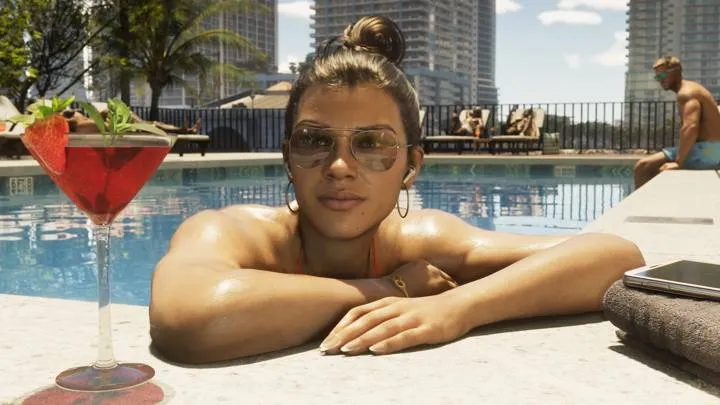
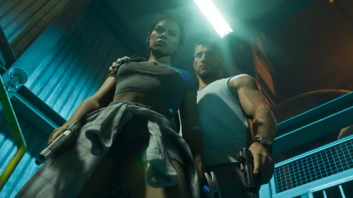
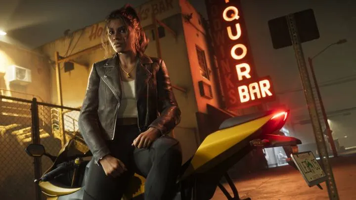
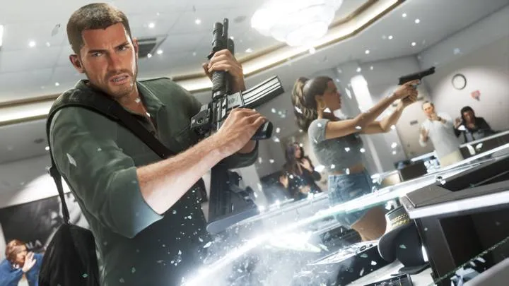
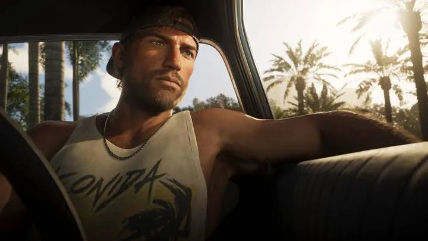

Опубликовано:
Четвёртая глава — жизнь в большом городе. Джейсон и Лусия обустраиваются в Ocean Beach, получают новые машины, адвоката, работу в охране клубов и знаменитостей и связи, которые ведут к главному делу главы — ограблению VCIA. Здесь же открывается побочная миссия That’s Where The Money Is…: за бронированным фургоном можно проследить до банка и вскрыть хранилище, пока оно открыто (8 хранилищ для 100%, готовьтесь к 4 звёздам розыска).
Все миссии главы 4
| № | Миссия | За кого | О чём |
|---|---|---|---|
| 1 | Ocean Beach ✓ | Джейсон и Лусия | Джейсон и Лусия обустраиваются. |
| 2 | Another Life ✓ | Лусия | Лусия вспоминает прошлое. |
| 3 | Company Cars ✓ | Джейсон и Лусия | Новые машины. |
| 4 | Lawyer Up ✓ | Джейсон и Лусия | Знакомство с адвокатом. |
| 5 | Party Hard ✓ | Джейсон и Лусия | Охрана знаменитости. |
| 6 | Heavy Lifting ✓ | Джейсон и Лусия | Доставка. |
| 7 | Photo/Shoot ✓ | Джейсон и Лусия | Фотосессия с Дре’Куаном. |
| 8 | Making Gainz ✓ | Лусия | Лусия заводит новое знакомство. |
| 9 | Watch It ✓ | Джейсон | Джейсон и Дре’Куан встречаются с владельцем клуба. |
| 10 | Cash Injections ✓ | Лусия | Лусия помогает знакомому. |
| 11 | Amateur Hour ✓ | Лусия | Лусия помогает Сиско разобраться с режиссёром. |
| 12 | Dirty Work ✓ | Джейсон и Лусия | Новые связи. |
| 13 | Too Much Baggage ✓ | Джейсон | Багаж в аэропорту. |
| 14 | Adventures in Babysitting ✓ | Джейсон | Джейсон работает охранником в клубе. |
| 15 | Fresh Evidence ✓ | Джейсон | Джейсон и Дре’Куан крадут компромат. |
| 16 | Power Play ✓ | Джейсон и Лусия | Джейсон собирает сведения. |
| 17 | Child’s Play | Джейсон и Лусия | Джейсон и Лусия помогают знакомому. |
| 18 | Headliners | Джейсон и Лусия | Real Dimez выступают в клубе VYB. |
| 19 | Close Surveillance | Джейсон | Джейсон работает со шпионским дроном. |
| 20 | Delivery Method | Джейсон | Джейсон под прикрытием. |
| 21 | Team Building | Лусия | Лусия доказывает, на что способна. |
| 22 | Fully Catered | Джейсон и Лусия | Угон транспорта. |
| 23 | VCIA Takedown | Джейсон и Лусия | Ограбление одобрено. |
| 24 | Sunset | Джейсон и Лусия | Джейсон и Лусия ищут ответы. |
| 25 | скрыто — спойлер | — | Описание скрыто, чтобы не раскрывать сюжет. |
✓ — готово подробное прохождение. Три миссии с сюжетными спойлерами в названии мы скрыли. Остальные прохождения добавляем каждый день.
Готовые прохождения












Частые вопросы
Сколько миссий в главе 4 GTA 6?
25 миссий сюжета по списку PC Gamer.
Где проходит глава 4?
В основном — Вайс-Сити.
Источники: PC Gamer, «GTA 6 mission list: All chapters and missions», 19.11.2026; Push Square, «GTA 6: Chapters & Story Missions», 19.11.2026; GTABase, «GTA 6 100% Completion Guide», 19.11.2026. Названия — как в английской версии игры.